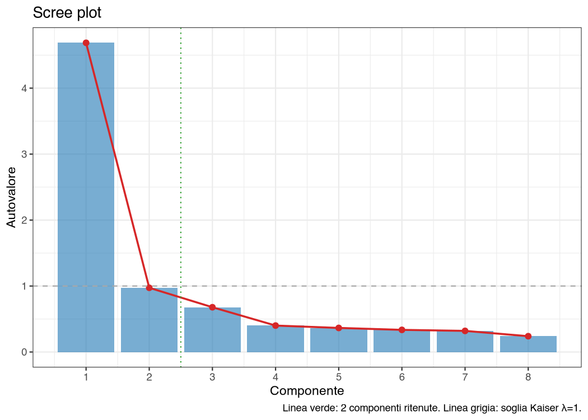
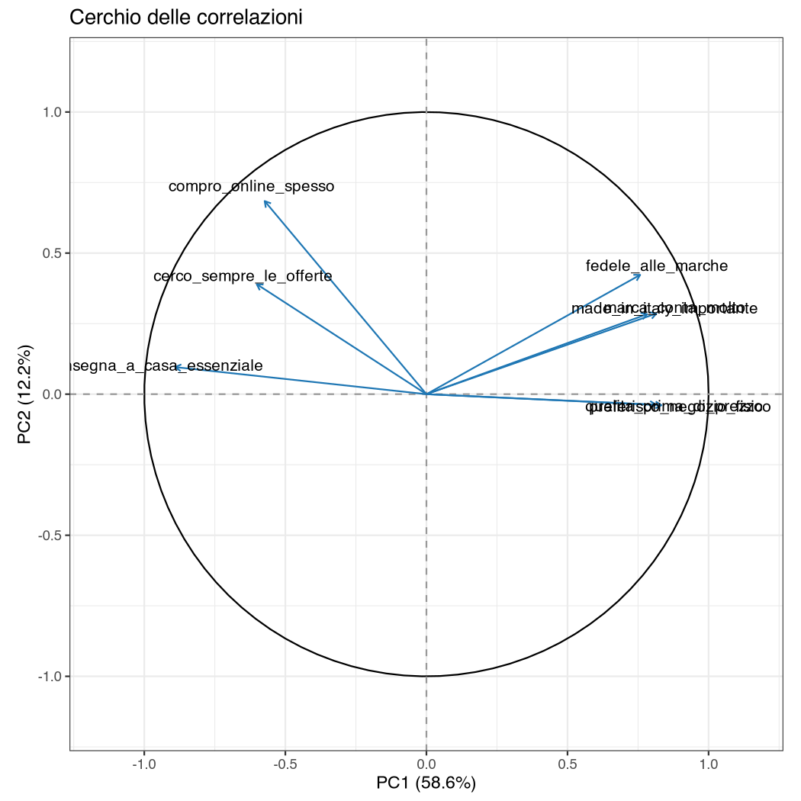
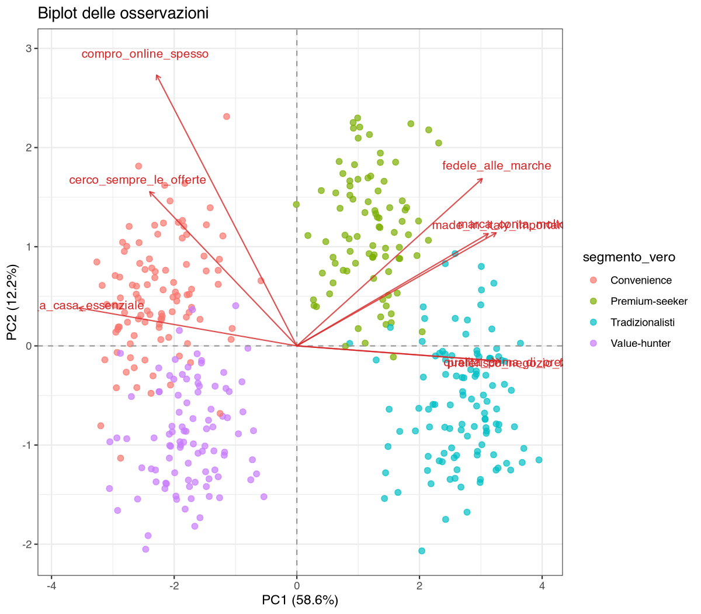
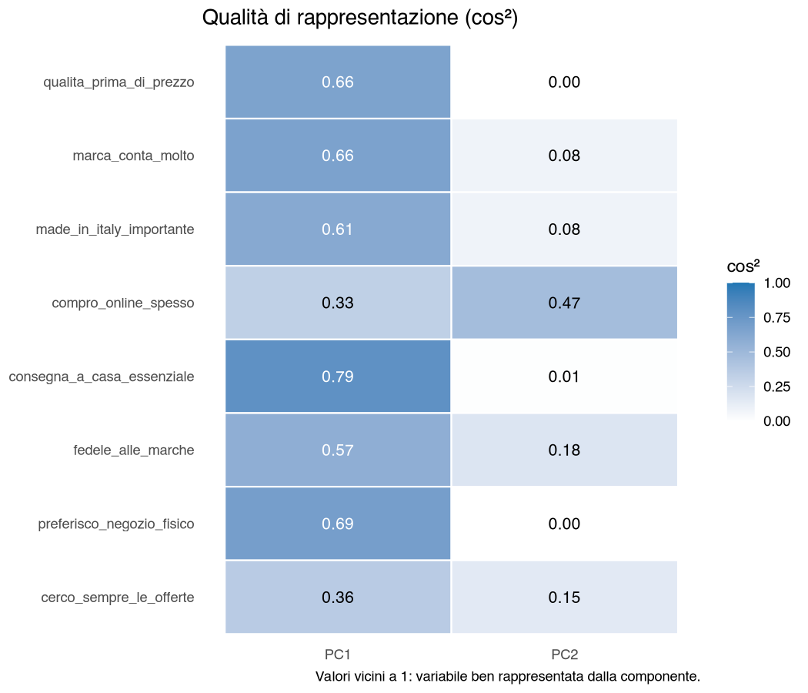

30 Contributi, cos² e biplot
Questo capitolo è la “lettura tecnica” dell’output dell’Analisi delle Componenti Principali (PCA, Principal Component Analysis): cosa sono autovalori, loadings, contributi, coseni quadrati (cos²), e come si interpretano graficamente nel cerchio delle correlazioni e nel biplot.
30.1 Autovalori e scree plot
I primi output sono il pannello Istruzioni e la tabella Impostazioni (variabili attive, osservazioni valide, standardizzazione, componenti ritenute e rotazione effettivamente applicata). Segue la tabella degli autovalori delle componenti principali (PC), numerate PC1, PC2, … (qui su survey_segmentazione.csv, 8 item standardizzati, gli stessi dell’esempio pratico a fine capitolo):
| Componente | Autovalore | % varianza | % cumulata |
|---|---|---|---|
| PC1 | 4,69 | 58,6 | 58,6 |
| PC2 | 0,97 | 12,2 | 70,8 |
| PC3 | 0,68 | 8,5 | 79,2 |
| PC4 | 0,40 | 5,0 | 84,3 |
| … | … | … | … |
Lo scree plot rappresenta visivamente la sequenza:

Letture combinate (su matrice di correlazione):
- Kaiser → tenere componenti con \(\lambda > 1\) (qui solo PC1; PC2, con \(\lambda = 0{,}97\), è appena sotto la soglia), criterio valido sulla PCA standardizzata. Nello scree plot la linea grigia tratteggiata a \(\lambda = 1\) compare solo con Standardizza = Sì: con la matrice di covarianza la scala degli autovalori è arbitraria e la soglia sarebbe fuorviante.
- Gomito → guardare dove la pendenza si appiattisce.
- Varianza cumulata → tipicamente target 70%.
Sono la fotografia della soluzione originale, anche quando è attiva una rotazione: servono a decidere quante componenti ritenere, decisione che precede la rotazione. L’effetto della rotazione si legge nella tabella separata delle somme dei quadrati dei loadings (SS loadings, da sum of squares; § P-23).
30.2 Loadings, contributi e cos²
Per ciascuna variabile attiva la PCA produce tre misure su ogni componente.
30.2.1 Loading (coordinata della variabile)
Con Standardizza = Sì indica la correlazione \(\ell_{jk}\) fra la variabile \(X_j\) e la componente PC\(_k\), e varia in \([-1, 1]\). Con Standardizza = No (matrice di covarianza) la tabella riporta invece \(\ell_{jk} = \sigma_j \operatorname{cor}(X_j, \text{PC}_k)\): la correlazione moltiplicata per la deviazione standard della variabile, nella sua unità di misura e non più limitata a \([-1, 1]\).
30.2.2 Contributo
Quota di varianza della componente “spiegata” dalla variabile:
\[ \text{contributo}_{jk} = 100 \cdot \frac{\ell_{jk}^2}{\sum_h \ell_{hk}^2} \]
Espresso in %. Senza rotazione il denominatore è l’autovalore \(\lambda_k\) della componente \(k\), quindi \(\text{contributo}_{jk} = 100\,\ell_{jk}^2/\lambda_k\). La formula vale sia sulla matrice di correlazione sia su quella di covarianza, purché \(\ell_{jk}\) sia la coordinata mostrata in tabella: con la matrice di covarianza diventa \(100\,\sigma_j^2 \operatorname{cor}^2(X_j,\text{PC}_k)/\lambda_k\), e le variabili con varianza grande dominano i contributi. Con Varimax il denominatore è la somma dei quadrati dei loadings della componente ruotata, che in generale non coincide con nessun autovalore originale. Con Promax il modulo calcola i contributi sulla structure matrix, normalizzandoli sulla somma dei quadrati della colonna: restano quote dentro la componente, ma quelle somme non sono quote additive di varianza spiegata (§ P-23). Le variabili con contributo > 100/\(p\) sono “sopra la media” su quella componente.
30.2.3 Coseno quadrato (cos²)
Quota di varianza della variabile spiegata dalla componente. Per una variabile attiva \(X_j\) è il quadrato della correlazione fra la variabile e la componente:
\[ \cos^2_{jk} = \operatorname{cor}^2(X_j, \text{PC}_k) \]
ed è la quantità che il modulo calcola. In \([0, 1]\). Una variabile è “ben rappresentata” sulla PC\(k\) se cos² è alto; sul piano formato da due componenti la qualità complessiva di rappresentazione è la somma
\[ \cos^2_{j,\text{piano}} = \cos^2_{j1} + \cos^2_{j2} \]
- Contributo = “quanto la variabile spiega la componente?” → utile per interpretare la componente (la chiamiamo come le variabili che contribuiscono di più).
- cos² = “quanto la componente spiega la variabile?” → utile per capire se quella variabile è ben rappresentata nel piano scelto (altrimenti il punto nel biplot/cerchio è “ingannevole”).
30.3 Cerchio delle correlazioni
Rappresenta le variabili attive come vettori nel piano (PC\(x\), PC\(y\)):
- Vettori vicini = variabili molto correlate.
- Vettori opposti = anti-correlate.
- Vettori ortogonali = non correlate (in quel piano).
- Il quadrato della lunghezza del vettore è la qualità di rappresentazione sul piano, \(\lVert v_j \rVert^2 = \cos^2_{j1} + \cos^2_{j2}\); quindi \(\lVert v_j \rVert = \sqrt{\cos^2_{j1} + \cos^2_{j2}}\). Un vettore vicino alla circonferenza indica una variabile ben rappresentata sul piano, uno corto una variabile rappresentata male.
- Il cerchio unitario è il confine teorico delle correlazioni variabile–componente. I loadings della tabella coincidono con queste correlazioni solo con Standardizza = Sì; con Standardizza = No sono nell’unità di misura della variabile e possono superare 1.
Il cerchio disegna sempre le correlazioni variabile–componente, anche quando la PCA è sulla matrice di covarianza (Standardizza = No): senza rotazione o con Varimax i vettori non escono mai dal cerchio unitario. Con Promax, invece, gli assi sono correlati: un vettore può uscire dal cerchio, e la somma dei cos² sui due assi non è più una quota di varianza della variabile. Con una rotazione attiva il titolo lo dichiara (— ruotato (Varimax)) e gli assi sono le componenti ruotate standardizzate, le stesse a cui si riferiscono i loadings e la matrice \(\Phi\) (§ P-23). Con Varimax, su variabili standardizzate, le coordinate dei vettori coincidono con i loadings ruotati della tabella; con Promax sono le correlazioni (structure), non i pattern loadings della tabella. In nessuno dei due casi sono le correlazioni fra le variabili e le coordinate PC1, PC2, … che il modulo salva nel dataset: dopo una rotazione, anche Varimax, queste danno numeri diversi.

Esempio di lettura. Se sul cerchio (PC1, PC2):
- PC1 ha loadings positivi alti su
qualita_prima_di_prezzo,marca_conta_moltoepreferisco_negozio_fisicoe negativo suconsegna_a_casa_essenziale→ PC1 oppone “tradizione/qualità” a “comodità/convenienza”. - PC2 ha il loading più alto su
compro_online_spesso→ PC2 è una dimensione secondaria di “propensione all’acquisto online”.
30.4 Biplot
Sovrappone in un unico grafico:
- le osservazioni (punti), proiettate nel piano (PC\(x\), PC\(y\));
- le variabili attive (vettori), disegnate con i loadings della tabella e riscalate per stare nel grafico. Con Standardizza = Sì (senza rotazione o con Varimax) i loadings sono le correlazioni, quindi le frecce hanno le stesse direzioni e le stesse lunghezze relative del cerchio. Con Standardizza = No le direzioni restano quelle del cerchio, ma ogni freccia è allungata in proporzione alla deviazione standard della variabile: una spesa mensile in euro avrà una freccia molto più lunga di un item Likert 1–7, senza per questo essere rappresentata meglio. Con Promax il biplot usa i pattern loadings della tabella, non le correlazioni del cerchio.

Lettura: conta la proiezione del punto lungo la direzione del vettore, non la distanza dalla punta della freccia. Un’osservazione proiettata lontano dall’origine nella stessa direzione della freccia tende ad avere un valore elevato sulla variabile; nella direzione opposta, un valore basso.
L’opzione Variabile qualitativa supplementare per biplot (se attivata) colora i punti per la modalità di una variabile categoriale (es. cluster, segmento), aiutando a visualizzare struttura latente.
30.5 Heatmap dei coseni²
Mostra una matrice variabili × componenti con cos² come intensità di colore:

Lettura rapida:
- Righe (variabili) con un’unica casella scura → variabile ben definita su una sola componente.
- Righe “fredde” ovunque → variabile mal rappresentata; servono più componenti.
30.6 Contributi e cos² delle osservazioni
L’opzione Mostra tabella contributi/coseni² delle osservazioni attiva tre tabelle riferite agli individui: coordinate, contributi e cos². Vengono mostrate le prime \(N\) osservazioni (default 20) ordinate per contributo medio decrescente sulle componenti ritenute. Utile per:
- Identificare osservazioni “estreme” che dominano una componente.
- Trovare gli outlier proiettati al margine del biplot.
Dipende dalla rotazione scelta, e i titoli delle tabelle lo dichiarano sempre.
Con Varimax la rotazione è ortogonale: agisce dentro il sottospazio delle componenti ritenute senza cambiare la distanza di ciascuna osservazione dall’origine. Le due definizioni valgono quindi tali e quali sulle coordinate ruotate, e il modulo ricalcola anche contributi e cos² delle osservazioni sugli assi ruotati:
\[ \cos^2_{ik} = \frac{\text{coord}_{ik}^2}{d_i^2}, \qquad \text{contributo}_{ik} = 100 \cdot \frac{\text{coord}_{ik}^2}{\sum_h \text{coord}_{hk}^2} \]
dove \(d_i\) è la distanza dell’osservazione dall’origine. I contributi si normalizzano sulla somma dei quadrati del nuovo asse, perché la rotazione ridistribuisce la varianza fra le componenti: è la stessa logica delle SS loadings.
Con Promax gli assi ruotati non sono ortogonali e quelle formule non sarebbero più giustificate. Il modulo mostra quindi le coordinate ruotate, ma lascia contributi e cos² delle osservazioni alla soluzione PCA non ruotata, dicendolo nel titolo della tabella: sono riferiti ad assi diversi da quelli delle coordinate, e non vanno confrontati fra loro.
30.7 Esempio pratico
Su survey_segmentazione.csv con gli 8 item Likert come variabili attive (Standardizza = Sì, nessuna rotazione, 2 componenti):
| Variabile | Loading PC1 | Loading PC2 | cos² piano |
|---|---|---|---|
qualita_prima_di_prezzo |
0,81 | -0,04 | 0,66 |
marca_conta_molto |
0,81 | 0,29 | 0,75 |
made_in_italy_importante |
0,78 | 0,28 | 0,69 |
compro_online_spesso |
-0,57 | 0,68 | 0,80 |
consegna_a_casa_essenziale |
-0,89 | 0,10 | 0,80 |
preferisco_negozio_fisico |
0,83 | -0,04 | 0,70 |
fedele_alle_marche |
0,76 | 0,42 | 0,75 |
cerco_sempre_le_offerte |
-0,60 | 0,39 | 0,51 |
PC1 spiega il 58,6% della varianza e PC2 il 12,2% (\(\lambda_2 = 0{,}97\): il criterio di Kaiser tratterrebbe una sola componente).
Naming delle componenti:
- PC1 = “Tradizione/qualità–marca vs comodità/convenienza” (loadings positivi alti su qualità, marca, made in Italy, fedeltà e negozio fisico; negativi su consegna a casa, offerte, acquisto online).
- PC2 = “Propensione all’acquisto online” (loading più alto su online, 0,68; più deboli su fedeltà e offerte). È una componente debole: autovalore 0,97, 12,2% della varianza.
30.8 Errori comuni
- ❌ Interpretare la posizione nel biplot senza guardare cos²: un punto al centro può avere cos² basso su entrambe le componenti → “mal rappresentato”, la sua posizione apparente non è informativa.
- ❌ Confondere contributo e loading: il contributo è in % e somma 100; il loading (con Standardizza = Sì) è una correlazione in \([-1, 1]\).
- ❌ Tenere troppe componenti: PCA con 6 componenti su 8 variabili è quasi inutile, perde la funzione di riduzione.